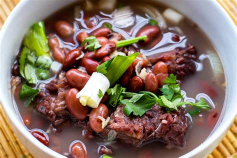

Brenebon

Description
Unique to the North Sulawesi of Indonesia, this food is a staple in the region and it is quite easy to make
Let's Cook!
Ingredients
- 500 gr beef shank
- 500 gr short ribs
- 150 gr kidney beans (soak in cold water overnight, replace the water to soak the beans twice)
- 3 carrots, cut into a round thin shape
- 3 tbsp cooking oil
- 6 garlic
- 5 shallots (about 100 gr)
- 1 thumb of ginger, cut into thin slices
- 3 salam or bay leaves
- 5 lime leaves
- 6 cloves
- 1/2 tsp ground caraway seeds (or substitute with ground fennel seeds) or jinten in Bahasa Indonesia
- 1/2 nutmeg, grated
- 2 tbsp salt, or to taste
- 1/2 tsp sugar
- 1 tsp pepper
- 5 tbsp fried shallots
- 10 scallions or green onions, minced
- 2 tomatoes, cut each into 8
Steps
- First: we are going to blanch the beef to remove any impurities. Prepare a large pot and fill half the pot
with water, then bring the water to boil in medium heat. Add all the beef (the water in the pot must cover
the meat) and bring the water to boil again in medium heat and continue cooking for 5 minutes. Discard the
water and wash the meat in running tap water
- Add shallots, garlic and caraway seeds with cooking oil into a blender and blend until smooth, then transfer
to a wok
- Cook the mixture while stirring occasionally until it is fragrant and dry and reduced in volume (it will
take about 10 minutes in medium heat). Transfer the mixture to the cooking pot
- To the same pot, add beef cut, water, ginger, salam leaves, lime leaves, cloves, grated nutmeg, salt, sugar
and pepper. Cook in low heat until beef is half done or starts to soften, then add kidney beans. Cook until
beef and beans are thoroughly cooked and tender. If during the cooking process the amount of water is
reduced, add water accordingly (you don’t have to add water if using a slow cooker or multi-function cooker
as the water will stay the same). Turn off the heat and let cool for about 15 minutes
- Take 5 tbsp of the cooked beans and 8 tbsp of the broth and process in a blender until smooth. Return this
mixture to the pot (this step is optional and you can skip it if you want a clear soup which is not so thick
in consistency)
- Add carrots and continue cooking until carrots are soft
- Turn off the heat, add fried shallots, green onions and tomatoes and stir to mix
- Transfer to serving bowls and serve hot with steam rice
Going up!
Take me Home!